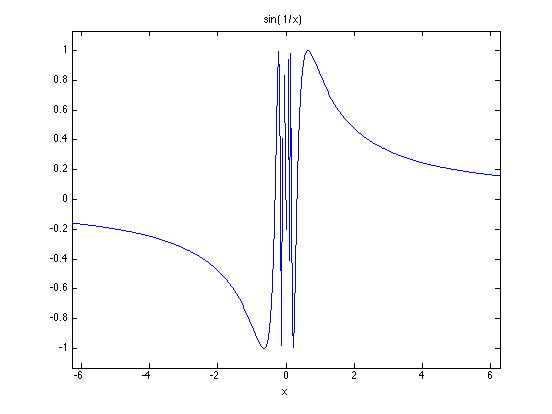

Demo of limest
Computation of a limit usually involves a function that we cannot evaluate at the point of interest. It is often due to a singularity at the point of interest that we cannot evaluate the function. Limest does the work for you, carefully extrapolating your function down to the limiting value.
John D'Errico, woodchips@rochester.rr.com
5/24/2008
Contents
- Limit of sin(x)/x, x --> 0
- The derivative as a limit, using the definition of a derivative
- Find the residue at a first order pole
- A limit with a low order subtractive cancellation
- The function needs not be vectorized
- A limit with a higher order subtractive cancellation
- Changing the order of the method used
- The highest accuracy
- Harder problems are still solvable
- Limits in the complex plane
- A limit at infinity
- A limit from two different directions
- No problems on functions that are well defined at the limit point
- If the limit does not exist, the error estimate will be large.
Limit of sin(x)/x, x --> 0
The true limit is 1, but note that MATLAB will not return the limiting value of this function at zero. Instead, we get a 0/0 result, a NaN.
format long g sin(0)./0
ans = NaN
Limest can properly predict the required limit, at the same time returning a measure of its uncertainty in that estimate.
[lim,err] = limest(@(x) sin(x)./x,0)
lim =
1
err =
3.10418245619633e-15
The derivative as a limit, using the definition of a derivative
Find d(cos(x))/dx at x == pi/2. That derivative is -1. The limit will be taken as a function of the differential parameter, dx. So we take the limit as dx --> 0, for a fixed value of x0.
x0 = pi/2; [lim,err] = limest(@(dx) (cos(x0+dx) - cos(x0))./dx,0)
lim =
-1
err =
2.83371792311754e-15
Find the residue at a first order pole
The function 1./(1-exp(2*z)) has a simple pole at z=0. The residue is given by the limit of (z-0)*fun(z) as z approaches the pole at 0.
Here, that residue should be -0.5.
[lim,err] = limest(@(z) z./(1-exp(2*z)),0)
lim =
-0.500000000000235
err =
4.53752019010913e-12
A limit with a low order subtractive cancellation
f(x) = (exp(x)-1)./x
As x --> 0, f(x) should approach 1. We can see from the series approximation for exp(x), the first term is 1. But when x is very near zero, the constant term dominates, then we subtract 1 and divide by x. But it is too late, since information is already lost.
[lim,err] = limest(@(x) (exp(x)-1)./x,0)
lim =
0.999999999999298
err =
7.63157643380744e-13
The function needs not be vectorized
In the previous example, the function was written in a vectorized form, using ./ where that was appropriate. Of course, not all functions can be easily so written.
If the function is not vectorized, then tell limest not to expect that.
[lim,err] = limest(@(x) (exp(x)-1)./x,0,'Vectorized','no')
lim =
0.999999999999298
err =
7.63157643380744e-13
A limit with a higher order subtractive cancellation
f(x) = (x.*exp(x)-exp(x)+1)./x.^2
As x --> 0, f(x) should approach 0.5. Compared to the previous example, the cancellation is now of second order. The true limit should be 0.5.
fun = @(x) (x.*exp(x)-exp(x)+1)./x.^2;
Evaluation of this function too near the limit point returns numerical trash. Yet, if we move a little further away from the limit point, the function gives a less accurate approximation.
fun(0) fun(1e-12) fun(1e-9) fun(1e-8) fun(1e-6) fun(1e-3)
ans =
NaN
ans =
0
ans =
0
ans =
1.11022302462516
ans =
0.500044450291171
ans =
0.500333458330893
Limest can predict a more accurate limiting value than any single function evaluation. See that the error estimate is roughly of the order of sqrt(eps).
[lim,err] = limest(fun,0)
lim =
0.500000000094929
err =
1.56957823156003e-09
Changing the order of the method used
In the previous example, we might choose to change the order of the approximations used. Generally, higher order methods will be better than very low order ones, but too high of an order may suffer from numerical problems too. The default MethodOrder is 4.
fun = @(x) (x.*exp(x)-exp(x)+1)./x.^2; disp('MethodOrder == 1') [lim,err] = limest(fun,0,'MethodOrder',1) disp('MethodOrder == 2') [lim,err] = limest(fun,0,'MethodOrder',2) disp('MethodOrder == 3') [lim,err] = limest(fun,0,'MethodOrder',3) disp('MethodOrder == 4') [lim,err] = limest(fun,0,'MethodOrder',4) disp('MethodOrder == 5') [lim,err] = limest(fun,0,'MethodOrder',5) disp('MethodOrder == 6') [lim,err] = limest(fun,0,'MethodOrder',6) disp('MethodOrder == 7') [lim,err] = limest(fun,0,'MethodOrder',7) disp('MethodOrder == 8') [lim,err] = limest(fun,0,'MethodOrder',8)
MethodOrder == 1
lim =
0.50000355697623
err =
5.18440971081941e-05
MethodOrder == 2
lim =
0.499999966564625
err =
3.25141880697321e-07
MethodOrder == 3
lim =
0.5000000018941
err =
1.44398490012884e-08
MethodOrder == 4
lim =
0.500000000094929
err =
1.56957823156003e-09
MethodOrder == 5
lim =
0.500000000165239
err =
9.2459501732486e-10
MethodOrder == 6
lim =
0.500000001876956
err =
1.49243964407882e-08
MethodOrder == 7
lim =
0.500000043271551
err =
3.68286624919576e-07
MethodOrder == 8
lim =
0.499998271135458
err =
1.67740949173514e-05
The highest accuracy
Use a high order method, but force limest to evaluate the function at a much finer sampling of points. The default sampling will evaluate the function at roughly 25 points. By reducing the stepRatio to 1.25, this will increase to roughly 160 function evaluations.
[lim,err] = limest(fun,0,'MethodOrder',8,'Step',1.25)
lim =
0.500000000002992
err =
1.23941253664887e-12
Harder problems are still solvable
Cancelling three terms means that nearly any function evaluations anywhere near the limit point will be trash. The limit here is easily found by a Taylor series argument, but it is also solvable using limest. Since it is a high order of cancellation, we need to increase the order of the method, as well as force limest to look farther away than usual from the limit point.
fun = @(x) (exp(x)-1-x-x.^2/2)./x.^3; [lim,err] = limest(fun,0,'methodorder',6,'dz',1)
lim =
0.16666660231359
err =
5.71248948194576e-07
Limits in the complex plane
The limit of cos(z), as z --> is still 1, even if we approach that point from the complex plane. Note that the function may be supplied in a variety of forms. A string function name, an inline function, or an anonymous function.
[lim,err] = limest('cos',0,'DZ',0+.00001*sqrt(-1))
lim =
1
err =
5.06910872412027e-15
A limit at infinity
Take the limit of f(x) = exp(-x)+2, as x --> +inf
Since limest will not handle infinite limits, we must transform the problem. Turn the problem into a limit at 0. The true limit at x=inf is clearly 2.
fun = @(x) exp(-x) + 2; [lim,err] = limest(@(z) fun(1./z),0)
lim =
2
err =
1.0753203460192e-14
A limit from two different directions
A discontinuous function will have different limits as we approach from below versus from above. Also, I'll use an inline function to define the function.
fun = inline('sign(x)','x'); disp('Taking the limit from above, the result should be 1') [lim,err] = limest(fun,0,'dz',1) disp('Taking the limit from below, the result should be -1') [lim,err] = limest(fun,0,'dz',-1)
Taking the limit from above, the result should be 1
lim =
1
err =
5.37660173009599e-15
Taking the limit from below, the result should be -1
lim =
-1
err =
5.37660173009599e-15
No problems on functions that are well defined at the limit point
Here the limit is a simple thing to know, since we can evaluate this function at the limit.
fun = @(x) tan(x); fun(0)
ans =
0
Limest succeeds, reflecting the problem simplicity with a quite small error estimate.
[lim,err] = limest(@(x) tan(x),0)
lim =
-4.22420710127785e-24
err =
3.20497058398515e-22
If the limit does not exist, the error estimate will be large.
fun = @(x) sin(1./x); ezplot(fun) [lim,err] = limest(fun,0)
lim =
0.775477503783198
err =
0.144329285985061
